In huisInside the house
Verlichting
De verlichting en de lichtknoppen spreken voor zich. Twee dingen gaan anders. In de vensterbank ligt een witte Philips Hue-afstandsbediening; daarmee bedien je de buitenspotjes in de overstek van de schuur. Het licht op de overloop gaat via twee Hue-schakelaars: één beneden bij de trap en één boven op de overloop.
Plisségordijnen
De plissé’s zijn elektrisch. Er liggen twee zwarte afstandsbedieningen: één in de vensterbank van de eetkamer en één bovenop het plateau van de schoorsteen. Elk gordijn heeft zijn eigen nummer; nummer 4 bedient de hele eetkamer in één keer en nummer 10 de woonkamer en de keuken.
Het kan ook met de hand: kort aan het koordje trekken. Eerste keer omlaag, tweede keer stop, derde keer omhoog.
Verwarming
Beneden ligt vloerverwarming in twee zones, die je apart instelt. De thermostaat voor woonkamer en keuken hangt naast de deur naar de hal; die voor de eetkamer hangt om het hoekje van de muur.
In de serre ligt geen vloerverwarming, daar hangt een radiator met een thermostaatknop. Boven zijn het alleen radiatoren, in de slaapkamers en badkamers, ook met een knop op de radiator zelf.
Ventilatie
Je hoeft geen ramen op een kier te zetten en geen roosters open te draaien. Het hele huis heeft een moderne WTW-installatie: er komt continu verse, gefilterde lucht binnen en de warmte uit de kamer wordt daarbij teruggeblazen. Hij staat altijd aan, is geruisloos en zit in elke ruimte, ook in de slaapkamers, de badkamer en het toilet beneden.
De bediening hangt in de badkamer en staat normaal op stand 2 (twee groene ledjes). Zet hem tijdens het douchen even op stand 3 (drie ledjes).
Lighting
The lights and switches speak for themselves. Two things work differently. A white Philips Hue remote sits on the windowsill; use it for the outdoor spotlights under the overhang of the shed. The landing light upstairs runs on two Hue switches: one downstairs by the staircase and one upstairs on the landing.
Pleated blinds
The blinds are electric. There are two black remotes: one on the dining room windowsill and one on top of the chimney ledge. Each blind has its own number; number 4 operates the whole dining room at once and number 10 the living room and kitchen.
You can also do it by hand: give the cord a short pull. First pull down, second stop, third up.
Heating
The ground floor has underfloor heating in two zones, set separately. The thermostat for the living room and kitchen is next to the door to the hallway; the one for the dining room is just around the corner of the wall.
The conservatory has no underfloor heating, but a radiator with a thermostatic knob. Upstairs there are radiators only, in the bedrooms and bathrooms, likewise with a knob on the radiator itself.
Ventilation
There is no need to open windows or vents. The whole house has a modern heat recovery system: fresh, filtered air comes in continuously while the warmth of the room is recovered and blown back. It runs all the time, it is silent, and it reaches every room, including the bedrooms, the bathroom and the downstairs toilet.
The control panel is in the bathroom and normally sits on setting 2 (two green LEDs). While showering, switch it to setting 3 (three LEDs) for a while.

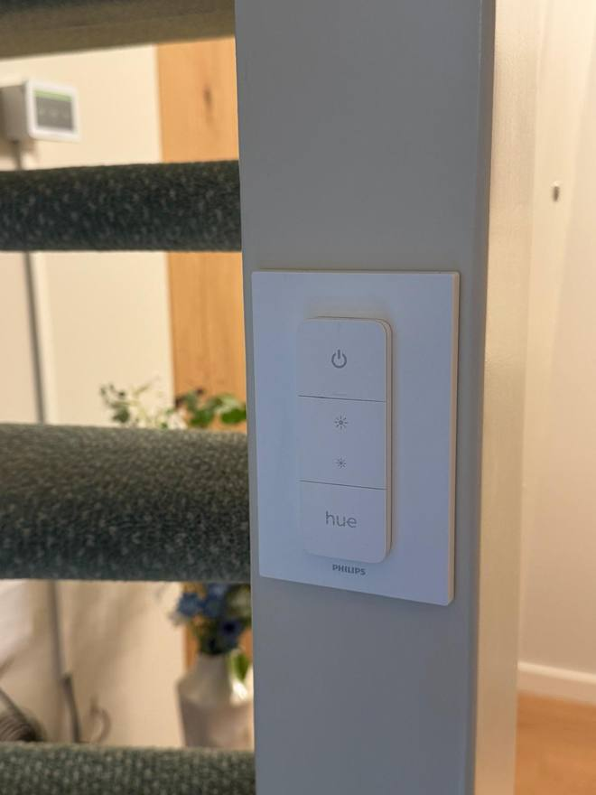
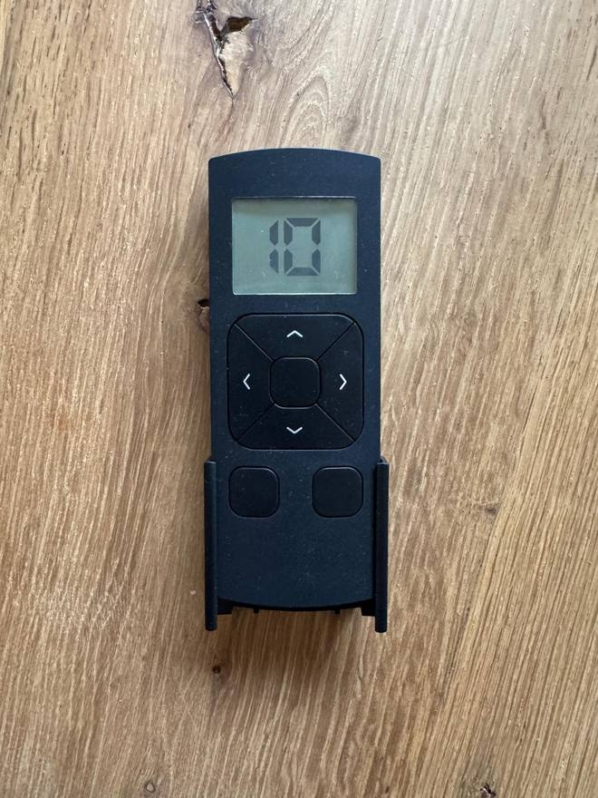
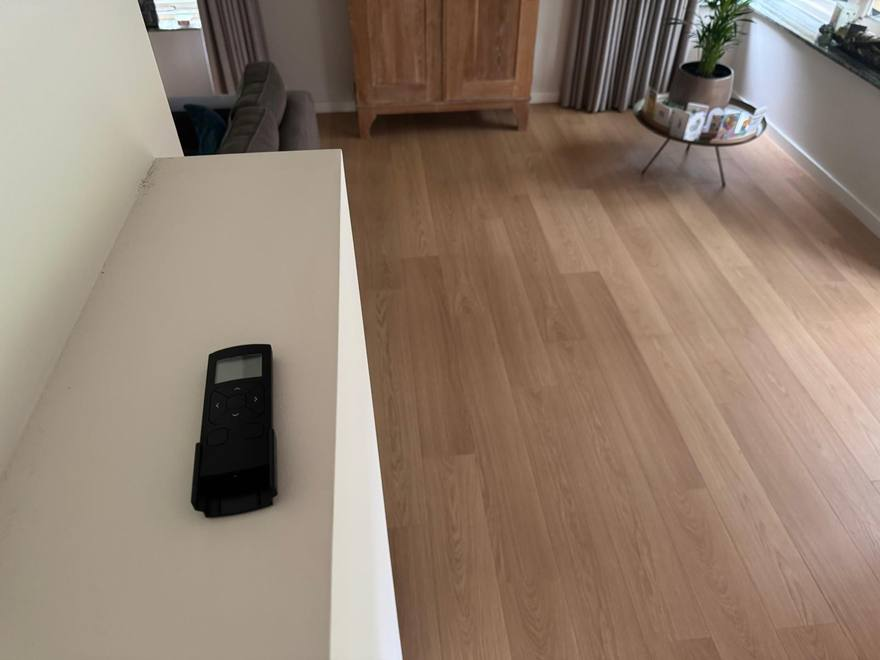
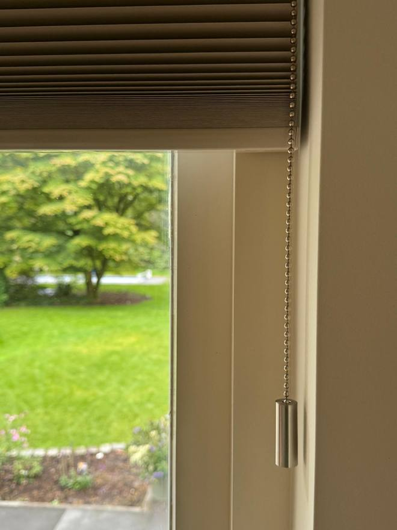
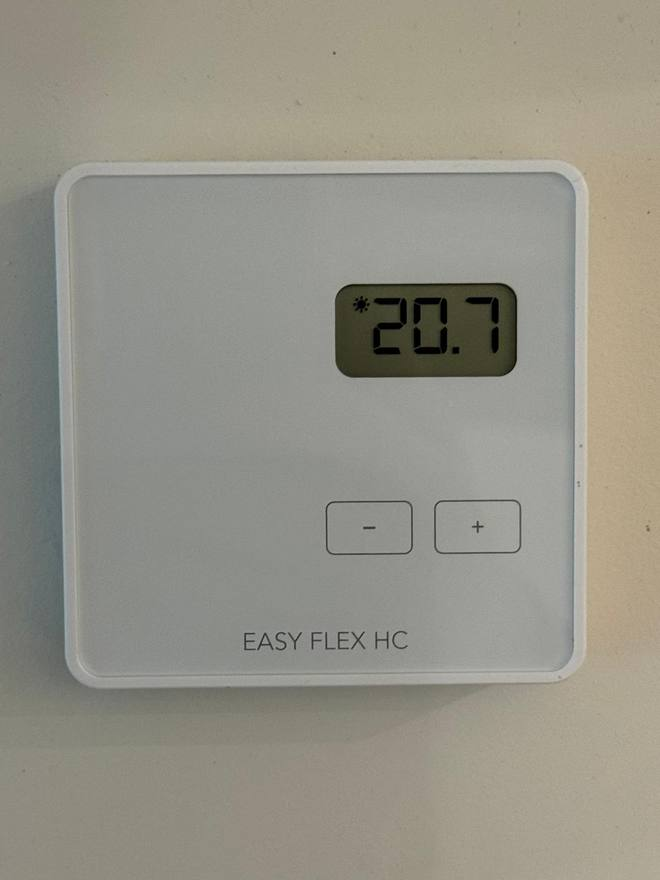
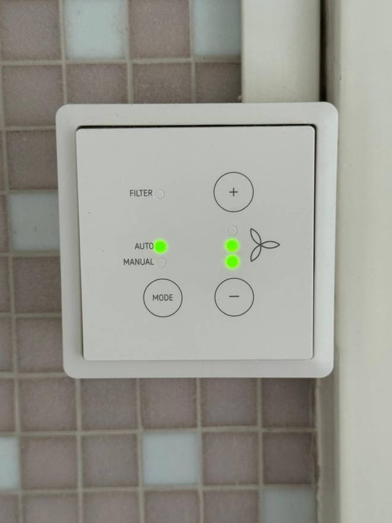
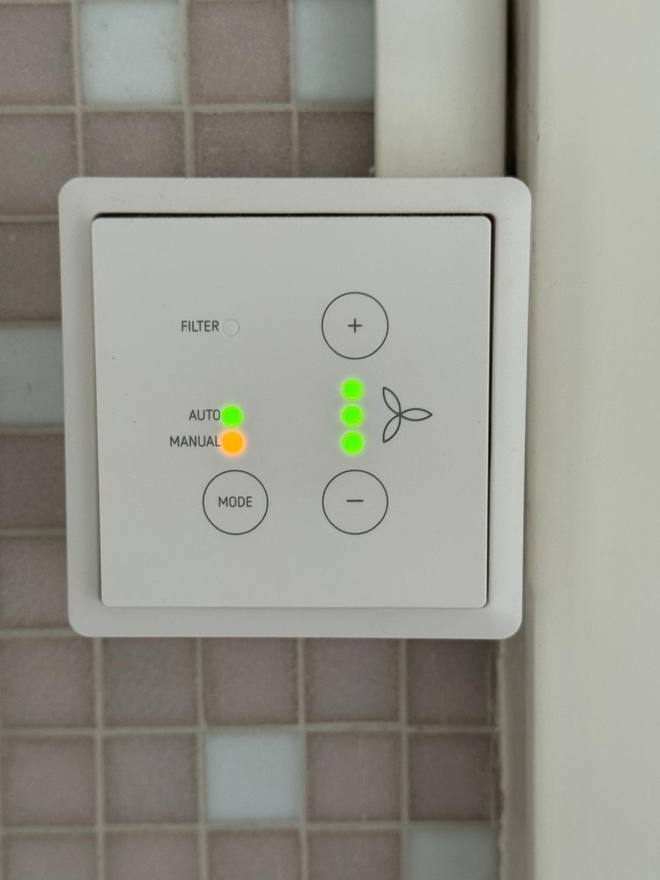
Bij koud weer: doe ’s avonds en ’s nachts de plissé’s samen met de gordijnen dicht. Ze werken dan als extra isolatie en de warmte blijft veel beter binnen. / In cold weather, please close the blinds together with the curtains at night: they act as extra insulation and keep the warmth inside.
Keuken & koffieKitchen & coffee
Koken
Het kooktoestel is een gastoestel en de elektrische ontsteking is defect. Steek de brander aan met de gasaansteker die in de keuken ligt.
Vaatwasser
Laat de vaatwasser als het kan overdag draaien: dan gebruikt hij de stroom van de zonnepanelen. De tekst op de bediening is afgesleten, maar op het plankje ligt een kaartje met de functies en wat ze betekenen.
De koffiemachine
Een inbouw volautomaat. Hij denkt met je mee: alles wat hij nodig heeft, meldt hij zelf op het display.
- Druk op de aan/uit-toets; hij spoelt zichzelf eerst even door.
- Kies je drank op het display, zet je kopje eronder en start.
- Vul het waterreservoir met koud kraanwater tot de max-streep, geen mineraalwater.
- In het bonenreservoir horen gewone espressobonen. Geen gemalen koffie en geen gekarameliseerde bonen: daar loopt het maalwerk op vast.
- Sluit het melkslangetje aan op het melkreservoir. Na elke melkdrank spoelt de machine het melksysteem automatisch met stoom door; de uitloop wordt daarbij heet.
- Vraagt hij om de lekschalen en het koffiedikbakje te legen? Doe dat en zet ze daarna goed terug, anders start hij niet.
Cooking
The hob runs on gas and its electric ignition is broken. Light the burner with the gas lighter kept in the kitchen.
Dishwasher
Please run the dishwasher during the day if you can, so it uses the power from the solar panels. The lettering on the control panel has worn off, but there is a card on the shelf explaining the functions.
The coffee machine
A built-in bean-to-cup machine. It looks after itself: whatever it needs, it tells you on the display.
- Press the on/off button; it rinses itself through first.
- Choose your drink on the display, put your cup underneath and start.
- Fill the water tank with cold tap water up to the max line, no mineral water.
- The bean container takes ordinary espresso beans. No ground coffee and no caramelised beans: they jam the grinder.
- Connect the milk tube to the milk container. After every milk drink the machine steam-rinses the milk system automatically; the spout gets hot in the process.
- If it asks you to empty the drip trays and the grounds container, do so and slide them back in properly, otherwise it will not start.
Zet het melkreservoir na gebruik in de koelkast, of maak het schoon. Laat het niet op het aanrecht staan. / Put the milk container in the fridge after use, or clean it, and please don’t leave it out on the worktop.
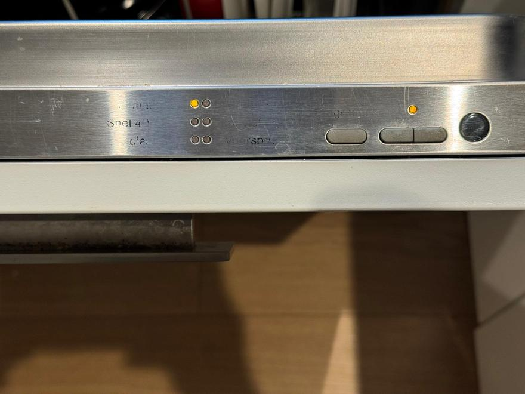
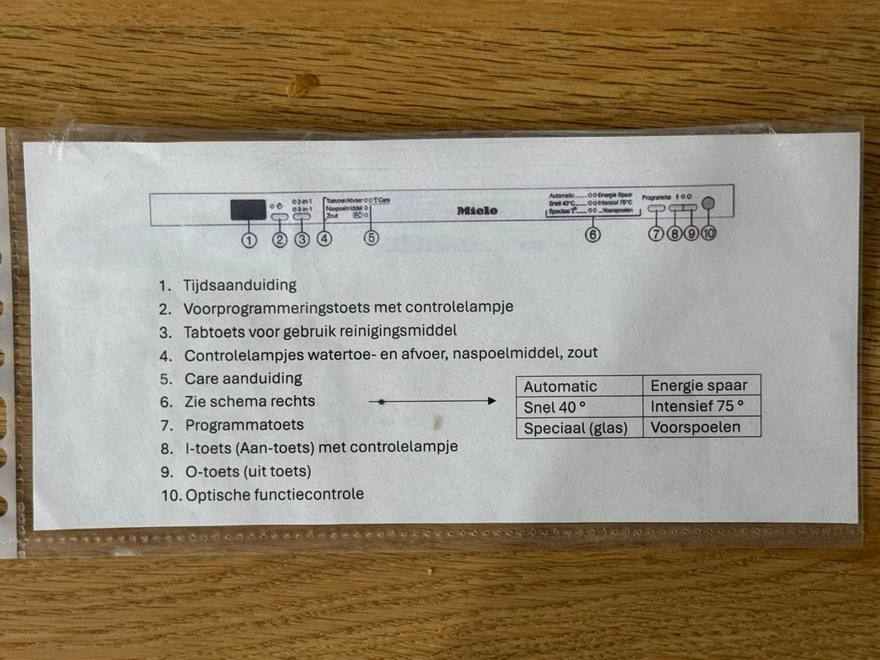
Televisie & wassenTelevision & laundry
De televisie
Eén afstandsbediening: die van KPN. Die bedient de soundbar gelijk mee. Druk op het rechterknopje aan de bovenkant, dan gaan de tv en de KPN-box samen aan.
Voor de streamingdiensten staan gastaccounts klaar. Je vindt ze bij Apps in de KPN TV+-omgeving: Netflix (ook via de aparte knop op de afstandsbediening), Viaplay en NLZiet.
De tv op de ouderslaapkamer zet je aan met beide knoppen op de afstandsbediening: TV én KPN.
Wassen en drogen
In de bijkeuken, aan de garagezijde, staan een wasmachine, een wasdroger en een wasrek. Gebruik ze gerust.
The television
One remote: the KPN one. It controls the soundbar at the same time. Press the right-hand button on the top and the TV and the KPN box switch on together.
Guest accounts are set up for the streaming services. You’ll find them under Apps in the KPN TV+ menu: Netflix (also via the dedicated button on the remote), Viaplay and NLZiet.
The TV in the main bedroom needs both buttons on the remote: TV and KPN.
Washing and drying
The utility room on the garage side has a washing machine, a tumble dryer and a drying rack. Please feel free to use them.
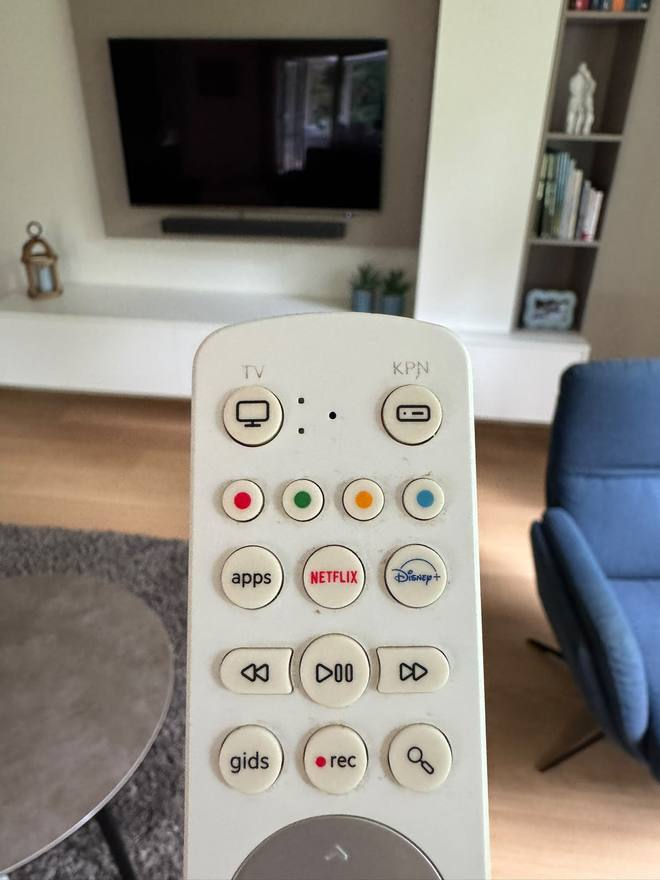
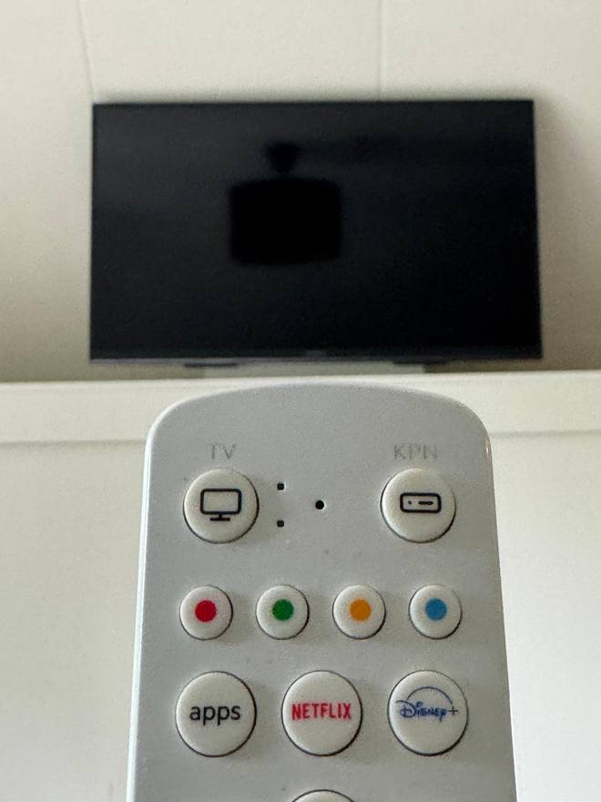
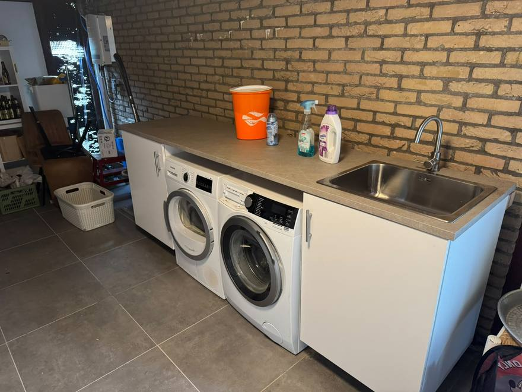
Let op: de kraan en de afvoer van de gootsteen in de bijkeuken zijn nog niet aangesloten. Gebruik die gootsteen dus niet. / Please note: the tap and drain of the utility room sink are not connected yet, so please don’t use that sink.